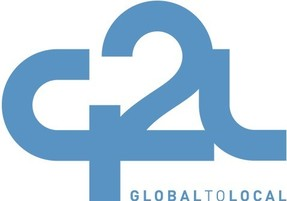

Partners
As a part of our community outreach, APAPA Seattle Chapter partners with many organizations.
City of Redmond
Redmond has a strong Mayor/Council, non-partisan form of government. Redmond officals will be providing opportunities through the creation of internship programs among different programs around the city.
APACEvotes
APACEvotes strives to increase access and participation in electoral and civic affairs by registering, educating and protecting Asian Pacific Islander American voters.
Global to Local
Global to Local develops programs and interventions to improve health, lower the cost of care, and empower underserved communities across the country.
Open Doors for Multicultural Families
The mission of Open Doors for Multicultural Families, is to ensure that diverse families who have family members with developmental disabilities and special health care needs have equal access to culturally and linguistically appropriate information, resources, and services.